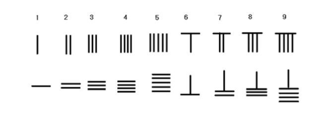

胡适说：“墨家论知识，注重经验，注重推论，看《墨辩》中论光学和力学的诸条，可见墨学者真能做许多实地实验。这正是科学的精神，是墨学的贡献。”墨子在科学上的贡献远远不止这些。就拿几何学来说吧，墨子是中国历史上少有的，甚至可能是绝无仅有的注重基本概念的早期科学家。他首次定义了几何学里“点”（他叫作“端”）的概念：“端，体之无厚而最前者也。”意思是说，一个物体含有很多的构成部分（体），“端”是其中没有量度而处于最边缘的部分。有人说这句话隐含着物质无限可分的意思，可能有些解释过度了。但他把点定义成没有体积的立体图形，意思是很明确的。这种仔细挖掘，精密定义概念的理论几何学精神在中国绝无仅有，很可能被只重实际、轻视理论的人看成是迂腐可笑的。
墨子也是中国逻辑思想的重要开拓者，他第一次提出了“辩”“类”“故”这些逻辑概念，并且要求把“辩”作为一种专门的知识来学习。由于他的倡导和启蒙，墨家养成了重视逻辑的传统，后期建立了第一个中国古代逻辑学体系。他在数学、天文学和光学方面的贡献在中国是空前的，在几何学、天文学和光学方面的贡献在中国也是绝无仅有的。他在某些方面很像阿基米德，他精于设计计算，兼做木工瓦工，背上的布袋子一刻也离不开。他设计了许多守城的器械，用这些器械帮助弱小的国家抵御大国的侵略。
有一个非常有名的故事，说楚王想入主中原，计划攻打宋国，雇用了有学问、有技术的公输班，制造攻城器械。要知道，知识可以卖钱，有时可以卖很多钱。世界上很多有知识的人为了金钱出卖灵魂。墨子听说了这个消息，马上冒着生命危险，徒步赶到楚国的都城郢城，去说服楚王。墨子向楚王说明，自己制造的反攻城器械足以抵御公输班的云梯。楚王动了除掉他的念头。可他告诉楚王，墨家三百个精干的弟子已经拿了这些器械守卫在宋国的城头。楚王只好放他走，并打消了攻打宋国的念头。鲁迅的小说《非攻》，写的就是这个故事。故事里的墨子“像一个乞丐，三十来岁，高个子，乌黑的脸”。他脚踩破草鞋，身背破铜刀，总是急匆匆地赶路，靠破包袱皮里裹着的干窝窝头和盐渍藜菜干来充饥。他每次出行，都能拯救成千上万人的性命。
我们可以想象一个精瘦黝黑的汉子在泥泞的小路上跋涉，有时雷雨交加，有时风雪交集。他那一身缝满了补丁的黑色衣服被汗水湿透，紧巴巴地贴在身上，裤腿卷到膝盖以上，露出一双干干的木棍般的腿骨，脚上的破草鞋沾满了泥巴。他背后斜背着一个黑色的布袋，每走一步，布袋就发出轻微的“哗啦哗啦”的声音。他把自己叫作“贱人”，一生“以自苦为极”，就是把吃苦的事情做到了极限。这个乞丐一般的人，是中国历史上一个难得的真正的人。孟子称赞他说“墨子兼爱，摩顶放踵利天下，为之”。
墨子的弟子基本上是由社会下层手工工匠、刑徒、贱役等人组成的，他们都只穿布衣草鞋，生活勤俭。他们的组织有点像一个综合了宗教性和政治性的社团。他的门徒多能吃苦耐劳，手足胼胝、面目黧黑，“腓无胈，胫无毛，沐甚雨，栉疾风”，也就是说大腿无赘肉，小腿无毛（长期光着腿走路磨的），经得起大风大雨。墨子的弟子到各国去做官，也必须遵守墨家的纪律，推行墨家的主张，还要向这个团体交纳一定的俸禄。墨者都能仗义执言，见义勇为，赴火蹈刃，死不旋踵。他们奔走在齐、鲁、宋、楚、卫、魏等国之间，拯救万民于水火之中。《吕氏春秋》记载说：“孔墨之弟子徒属，充满天下，皆以仁义之术教导于天下。”可见在当时，墨子、墨家学派及其思想、行为对全社会有极大的影响力，足以与孔子、儒家学派相比肩。
《墨经》中关于“御城”（就是城防）的内容，许多同阿基米德采用的方法不谋而合，这是非常有趣的。从某种意义上来说，墨子是中国古代最具人道主义精神，也最被人忽视的人物。尤其是西汉以后，罢黜百家，独尊儒术，墨家随之式微。其实，从孟胜的作为我们已经能看出墨家式微的端倪。作为巨子，也就是墨家的领袖，孟胜已经忘记了师祖“兼爱”“兴天下之利，除天下之害”的真谛，糊里糊涂地为一个人尽忠，还把所有的骨干精英都带进了坟墓。
墨子和他的门人身上所背的布袋流传了很久。从春秋时代起，在上千年的时间里，这片土地上总是有一些背着布袋走街串巷的人。他们为人设计宫殿、庙宇、祠堂、粮仓，指挥开挖河渠，观看天象，每有数字疑难，便打开布袋。袋子里装着的并非什么珍宝秘籍，而是几百根小竹棍。他们寻一块平坦的所在，或是案几，或是地面，把小竹棍摆来摆去，口中念念有词，名曰“布算”（意思是摆开来计算），不一会儿，就给出答案，令旁观者啧啧称奇。
这些小竹棍叫作算筹。按《汉书·律历志》的记载，算筹是直径一分、长六寸的圆形竹棍，二百七十一根为一“握”。后来长度缩短，截面也从圆形改成方形或扁圆，一来为了缩小布算时所占的面积，二来防止算筹滚动。到了唐代，有一段时间甚至规定文武官员都必须携带算袋。那时候的算筹，除了竹筹，还有木筹、铁筹，甚至有玉筹和象牙筹等等，这些贵重的算筹被装在精美的算筹袋或算筹筒里。

图 12：从 1 到 9 数字的两种算筹表示方法，上一行为竖码，下一行为横码
中华民族是世界上最早采用10进位制的民族，早在公元前1400年的商代，它就已经应用于当时人们的生产生活中。远在阿拉伯数字出现之前，背布袋的人已经能够靠这些算筹，利用10进位制来进行相当复杂的运算。1、2、3、4、5分别由一到五根算筹表示，横着放、竖着放都行；6是一横一竖，7是两横一竖，8是三横一竖，9是四横一竖。图12给出从1到9这九个数字的算筹表示方法。李约瑟（Noel Joseph Terence Montgomery Needham，公元1900－公元1995）就指出：“在商代甲骨文中，10进位制已经明显可见，也比同时代的巴比伦和埃及的数字系统更为先进。巴比伦和埃及的数字系统，虽然也有进位，但唯独商代的中国人，能用不多于九个算筹数字，代表任意数字，不论多大。这是一项巨大的进步。”
筹算一般在地面或桌面上进行，通常没有格子，相邻的筹码容易相互混淆，比如2、3和1并排排列，有可能被误读为51或24。为了避免误解，计算时交替使用竖码和横码，个位用竖码、十位用横码、百位用竖码、千位用横码，等等，以此类推。这叫作“一纵十横，百立千僵，千十相望，万百相当”。那时候没有零的符号，遇到零时用空位表示。值得注意的是，算筹计数从来不是像古代毛笔书写那样从右到左、从上到下，而是跟算盘的排列一样，从左到右、从上到下。这跟现代科学计数法相同。
背布袋的人已经对方程（1）形式的数值解相当熟悉了。比如，有一个立方体，体积是1 860 867立方尺，它的边长应该是多少？换句话说，就是：
x3 = 1 860 867（1a），求x。
这个问题最早出现在《九章算术》里，书的作者不详，很可能是许多无名背布袋者在战国、秦汉之间几百年数学工作的汇总。中国人没有系统的几何学，但对于体积、面积和长度的关系却很重视，因为这关系到攻城掠镇、土木工程、粮食买卖等的需要。